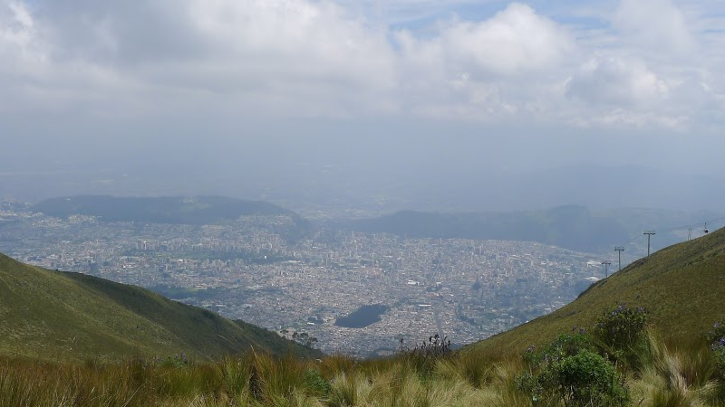

5/7 Amazonie : les défis de la pollution et de la déforestation
Bonjour à tous !
Dans le cadre de notre cinquième article sur l’eau (le temps passe si vite…) nous traiterons aujourd’hui des problèmes de l’eau en Amazonie ! Cette immense forêt tropicale surnommée « le poumon vert de la planète » reçoit des quantités abondantes en eau douce, mais pour autant les défis qui la menacent sont de taille !
Présentation géographique :
La particularité géographique de l’Amérique du Sud réside dans une certaine dualité entre sa partie amazonienne qui s’étend sur 37% du territoire, et la région andine aux sommets très élevés (nous avons pu en attester lors de notre tentative d’ascension du Chimborazo, en Equateur, qui culmine à 6268m). Pour des raisons de survie, les populations de Colombie, d’Equateur, du Pérou et de Bolivie se sont historiquement regroupées en altitude : en effet, le climat chaud et l’hydrologie généreuse de la forêt amazonienne en ont fait une des régions du monde où la biodiversité est la plus forte… au grand dam des êtres humains ! Les parasites, bactéries, insectes, virus et pléthores de petits organismes rendent l’environnement totalement inhospitalier et la lutte pour la survie épuisante. Notre passage à San Roque de Cumbaza, au cœur de la forêt amazonienne péruvienne nous fait vite comprendre le choix des conquistadors espagnols de placer leurs capitales, Bogota, Quito et La Paz à respectivement 2640m, 2850m et 3660m d’altitude ! En l’espace de deux jours nous avons eu l’occasion de croiser plusieurs tarentules vénéneuses (heureusement non agressives si on ne les provoque pas) et nous sommes revenus avec une belle collection de boutons de moustiques sur le corps. Seule Lima, capitale péruvienne regroupant un tiers de la population du pays, se trouve au bord de la mer.
A San Roque de Cumbaza, nous avons pu être témoins de l’intensité d’une pluie tropicale
Antoine, sur un pont au-dessus du fleuve Cumbaza, un affluent de l’Amazone

Quito, la capitale équatorienne nichée dans les hauteurs des Andes où le climat est plus favorable
L’Amazonie un régulateur de climat plutôt qu’un « poumon vert »
Nous rencontrons à Medellín en Colombie Laura, Felipe et Julian, trois membres fondateurs de l’association Ingeo Bosque, qui étudient la gestion de l’eau douce dans la forêt amazonienne colombienne. Felipe nous le dit d’emblée : « Si vous regardez la Colombie d’un point de vue simplement anthropocentrique, alors la zone amazonienne n’a que très peu d’intérêt » Et pour cause, 1,3M d’habitants peuplent la zone amazonienne contre 30,5M dans la partie andine du pays. Mais Felipe nous met tout de suite en garde « En revanche cette zone est cruciale d’un point de vue écologique ainsi que pour la régulation du climat au niveau mondial ! » En effet on l’ignore trop souvent mais la forêt a un impact direct sur le climat et les précipitations ! On utilise de manière un peu trop galvaudée l’expression « poumon de la planète » pour parler de l’Amazonie. Les forêts produisent de l’oxygène via le processus de photosynthèse… mais elles en consomment aussi ! En revanche les arbres rejettent de l’eau dans l’atmosphère par transpiration de leurs feuilles et contribuent à la formation de nuages. L’Amazonie crée ainsi 50 à 80% de ses propres pluies par transpiration. De plus les forêts agissent comme une pompe des précipitations des zones côtières vers le continent et elles contribuent ainsi à réguler le climat et les vents. En résumé négliger la forêt amazonienne signifie à terme moins de précipitations pour l’ensemble de la région et une plus grande sensibilité aux variations climatiques.
Les inégalités de répartition entre la population et les précipitations de chaque région de Colombie
Rencontre avec Julian, Felipe et Laura de l’association Ingeo Bosque
Le phénomène El Niño
Justement les variations climatiques… la Colombie, l’Equateur et le Pérou en subissent de plus en plus les conséquences à cause du phénomène d’El Niño. El Niño est un phénomène climatique naturel qui consiste en un réchauffement des courants marins au large du Pérou et de l’Equateur. Ce phénomène a lieu de façon cyclique environ tous les 7 ans, mais ses conséquences peuvent être catastrophiques pour les pays d’Amérique du Sud. El Niño bouleverse les zones de précipitations pouvant ainsi provoquer de violentes pluies qui entraînent des glissements de terrains et des inondations dévastatrices, mais peut aussi provoquer à l’inverse de graves sécheresses ! Felipe nous explique qu’en 2014 la Colombie a été frappée par un violent épisode d’El Niño et que la région d’Orinoco a vu ses ressources en eau diminuer de 50 à 65% ! Les conséquences pour les habitants, la faune et la flore ont été désastreuses.
Ce qu’il est important de comprendre c’est que si ce phénomène est a priori naturel, on observe une intensification des effets au cours des dernières années. Tout est lié : déforestation, perturbation du climat, aggravation des phénomènes naturels…
Une sécheresse a frappé la région d’Orinoco en Colombie après un violent épisode d’El Niño en 2014
Le défi de la déforestation
La forêt amazonienne est au cœur des questions de la déforestation. Vous avez sans doute déjà entendu ces chiffres impressionnants. Toutes les 4 secondes, l’équivalent d’un terrain de football de forêt disparaît. Plus du cinquième de la surface de l’Amazone a déjà été détruit. Laura et Julian nous le confirme la déforestation est un enjeu de taille ici. En général les zones « déforestées » servent à l’établissement de pâturages pour les élevages de la région. Tiens tiens, on retrouve l’une des problématiques abordées lors de notre séjour au Montana…
A terme la déforestation à outrance pourrait avoir des conséquences dramatiques. On vous l’expliquait plus haut, la forêt joue un rôle essentiel pour réguler le climat et drainer les pluies. La déforestation signifie une diminution des précipitations et une plus forte sensibilité aux phénomènes climatiques qui, on l’a vu, peuvent être terribles. Une autre conséquence majeure est celle de l’appauvrissement des sols. Les sols boisés absorbent et filtrent 10 fois plus d’eau que les pâturages ! Ceci permet entre autres de recharger les nappes phréatiques et d’éviter les inondations. Enfin il y a tout un enjeu autour de la préservation de la biodiversité de la forêt amazonienne qui est la plus riche du monde.
Lors de notre rencontre avec l’équipe d’Ingeo Bosque, nous avons été surpris d’apprendre qu’il n’existait pas aujourd’hui en Colombie d’étude formelle qui liait le phénomène de déforestation à celui de l’appauvrissement des ressources en eau. Si tout le monde en a plus ou moins le sentiment, l’état colombien ne s’y attarde pas plus que ça en l’absence de preuve… et ne se donne pas tellement les moyens d’aller chercher ces preuves ! L’objectif d’Ingeo Bosque est donc de fournir au gouvernement et aux entreprises des données claires et précises sur leur impact environnemental lorsqu’ils touchent à la forêt amazonienne.
Déjà plus d’1/5 de la surface de la forêt amazonienne a disparu
La forêt est essentielle pour recharger les réserves d’eau souterraines et éviter les inondations
Le défi de la pollution
Les entreprises pour finir ont aussi une part importante dans la gestion des ressources en eau de la forêt amazonienne. Depuis 1993 en Colombie, des lois existent pour obliger les entreprises qui utilisent l’eau de la forêt amazonienne à consacrer 1% du budget du projet à la préservation de la ressource. Le même type de loi existe dans les autres pays de la région. Toutefois les activités économiques de la région sont une véritable menace pour l’écosystème tout entier. Il y a deux mois, le Brésil a connu la plus grande catastrophe écologique de son histoire après la rupture de deux barrages de l’entreprise minière Samarco, dont des cuves collectant des résidus d’extraction ont cédé sous leur poids. Les coulées de boue toxiques ont contaminé l’immense fleuve Rio Doce et des milliers d’habitants ont dû être évacués. Ailleurs, l’utilisation massive du mercure pour le traitement de l’argent (en Bolivie en particulier) et de nombreux autres types de pollution nous met devant un fait de plus en plus inévitable : il faut agir pour préserver l’Amazone, premier fleuve mondial qui concentre à lui seul 18% des réserves en eau douce de la planète.
Au Brésil, les coulées de boue toxique dans le Rio Doce ont provoqué la plus grave catastrophe environnementale de l’histoire du pays
Dans notre prochain épisode nous aborderons l’épineuse question de la gestion d’une ressource publique. Quelle place pour les compagnies privées ? Comment mettre une valeur sur une ressource vitale ?
A très vite